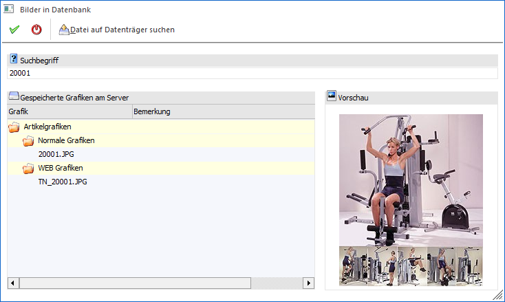
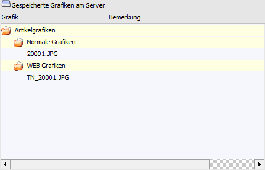

Bei gewissen Datenbereichen (Personenkonten, Artikelstamm, Textbausteine, etc.) können Grafiken hinterlegt bzw. zunächst im Programm "Bildersuche" bearbeitet werden. In diesen Fenstern kann nach vorhandenen Grafiken gesucht werden, wobei es zwei grundsätzliche Möglichkeiten gibt:
ü Die Grafiken werden in der zentralen Systemdatenbank gespeichert.
ü Die Grafiken werden irgendwo im Netzwerk gespeichert (siehe Button "Datei auf Datenträger suchen").
In diesem Fenster können beide Arten von Bildern ausgewählt und in den Stammdatenbereich übernommen werden. Für die Übergabe an das Programm "Bildersuche" können hingegen nur Grafiken genutzt werden, welche in der zentralen Systemdatenbank gespeichert wurden.
Hinweis
Neue Grafiken für die zentrale Systemdatenbank können auch per Drag & Drop in dieses Fenster importiert werden. D.h. wenn eine Grafik nicht vorhanden ist, so muss nicht zuerst in das Programm "Grafiken importieren" (WinLine START - Datei) gewechselt werden, sondern es kann direkt hier der Import stattfinden.

Ø Suchbegriff
In diesem Feld kann ein Suchbegriff eingegeben werden, wobei sowohl in dem Grafiknamen, als auch in der Bemerkung, gesucht wird. Die Suche beschränkt sich hierbei auf die Grafiken, welche in der Systemdatenbank gespeichert wurden.
Tabelle "Gespeicherte Grafiken am Server"

In der Tabelle werden alle gefundenen Grafiken angezeigt. Wird in der Tabelle eine Grafik angewählt, so wird im Bereich "Vorschau" der Inhalt der Grafik angezeigt.
Buttons
Ø Ok
Durch Anwahl des Buttons "Ok" bzw. der Taste F5 wird die markierte Grafik an das Ausgangsprogramm übergeben.
Ø Ende
Bei Anwahl des Buttons "Ende" bzw. der Taste ESC wird das Fenster geschlossen und keine Grafik an das Ausgangsprogramm übergeben.
Ø Datei auf Datenträger suchen
Durch Anklicken des Buttons "Datei auf Datenträger suchen" kann nach einer Grafik gesucht werden, die irgendwo auf einer Festplatte (nicht in der zentralen Systemdatenbank) gespeichert ist. Diese wird automatisch an das Ausgangsprogramm übergeben.